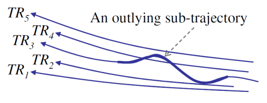

Overview
This is an open-source library to find outlier trajectories in a dataset. This library is based on the work of Jae-Gil Lee and others.
What Are Trajectories?
Trajectories are everywhere - pedestrians, vehicles, hurricanes, animals, and many other objects produce trajectories of position information that change over time. Trajectory mining seeks to identify patterns and interesting features in trajectory datasets. Trajectory mining techniques can be used to categorize paths of hurricanes, identify suspicious individuals in a park, or predict the destination of a car in a city.
Background and Motivations
This is a library for trajectory outlier detection that uses the algorithm presented by Jae-Gil Lee and others in their paper Trajectory Outlier Detection: A Partition-and-Detect Framework [1]. Outlier trajectories have paths that are not similar to other trajectories in the dataset.
This code is based heavily on the source code made available on Jae-Gil Lee's webpage. The code on his website is a complete implementation of their algorithm, but like most research prototypes it includes little documentation and is unusable as a general-purpose library. Additionally, it was written with Microsoft Visual Studio - it uses Windows-specific visualization and proprietary Microsoft C++ structures. Therefore, the goal of this project was to take that implementation and rewrite it as a cross-platform library.
[1] Jae-Gil Lee, Jiawei Han, and Xiaolei Li. 2008. Trajectory Outlier Detection: A Partition-and-Detect Framework. In Proceedings of the 2008 IEEE 24th International Conference on Data Engineering (ICDE '08). IEEE Computer Society, Washington, DC, USA, 140-149.
Trajectory Plotting
Easily plot trajectories! Shown here is a dataset of hurricane paths. Plots are generated with Gnuplot, a generic cross-platform plotting library.

Outlier Plotting
After finding outliers in the hurricane dataset we can plot outlier trajectories (red) and outlying partitions (thick red).

Basic Algorithm Overview
The library is based on the trajectory outlier detection algorithm presented in [1] and available here.
The key goal behind the algorithm is to not just identify outlying trajectories, but outlying sub-trajectories. With long and complicated trajectories much of an anomalous trajectory may still be similar to other trajectories - so we want to a way to identify the outlying part of a trajectory, or sub-trajectory.
 Graphic from [1]
To do this, the algorithm employs a Partition-and-Detect framework. Trajectories are first divided into partitions that efficiently describe the movement of the trajectory in a concise set of straight line segments. The partitions are then compared spatially to find outlying segments. An overall trajectory is deemed to be outlying if a significant portion of its path is composed of outlying partitions.
 Graphic from [1]
Graphic from [1]
[1] Jae-Gil Lee, Jiawei Han, and Xiaolei Li. 2008. Trajectory Outlier Detection: A Partition-and-Detect Framework. In Proceedings of the 2008 IEEE 24th International Conference on Data Engineering (ICDE '08). IEEE Computer Society, Washington, DC, USA, 140-149.
Requirements
The code was written to be portable across all major platforms. The code was written in C++11 and must be compiled with a C++11 compatible compiler such as gcc. Plotting functionality is provided by the cross-platform gnuplot library, which is not included in this package.
The code was tested in Linux and gcc 4.8.2.
Trajectory File Format
Trajectory data must be in a specific file format to be read properly. The characteristics of the format are:
- Line 1 contains an integer representing the number of dimensions in the dataset
- Line 2 contains an integer representing the number of trajectories in the dataset
- Lines 3 through the end of the file contain the trajectories, one per line
- Each trajectory line contains numbers separated by spaces. The first field is the numeric trajectory ID, the second field is the number of data points contained in the trajectory path, and the rest of the line contains the positions of each data point in the format x1 y1 x2 y2 x3 y3 x4 y4 ... (for a 2-D dataset).
An example file, containing 3 two-dimensional trajectories:
2
3
0 3 0.1 0.4 1.2 1.2 2.2 2.1
1 5 -2.05 0.07 -2.09 1.09 -2.01 2.06 -2.05 3.01 -1.02 3.53
2 5 2.232 3.14124 2.51241 3.012 2.412414 2.5212 2.2241 2.141241 1.512 1.52224
Interface
The main outward-facing classes are TrajData and COutlierDetector, which handle the dataset and the outlier detection respectively.
The following code block illustrates how to read in data, partition trajectories and find outliers, and output a plot of the trajectory outliers.
// TrajData reads in data and holds trajectory information
TrajData data;
data.readFile("./hurricane2000_2006.tra");
// COutlierDetector will find outliers in the provided dataset
COutlierDetector outlierDetector(&data);
outlierDetector.PartitionTrajectory();
outlierDetector.DetectOutlier();
// Output plot of trajectories and outliers
data.OutputTrajectoryPlot("./outlierPlot.eps");
Full Documentation
The full API and source documentation can be found here.